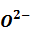
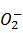
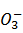

Compuestos binarios donde el oxígeno es la parte electronegativa. Por tanto, siguiendo el orden de electronegatividad de los elementos, las combinaciones de oxígeno con elementos halógenos no se consideran dentro de estos compuestos desde el 2005.
Los iones que pueden formar el oxígeno son los siguientes:
- : Óxido
 : Peróxido
: Peróxido-  : Superóxido
-  : Ozónido
Los dos primeros son los más estables, los otros dos no serán objeto de estudio en este curso.